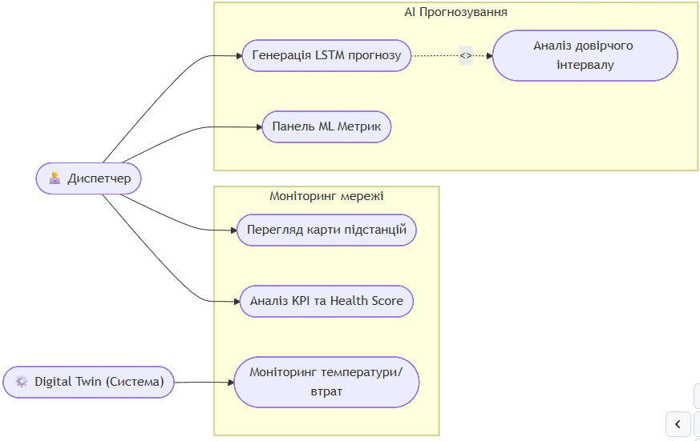
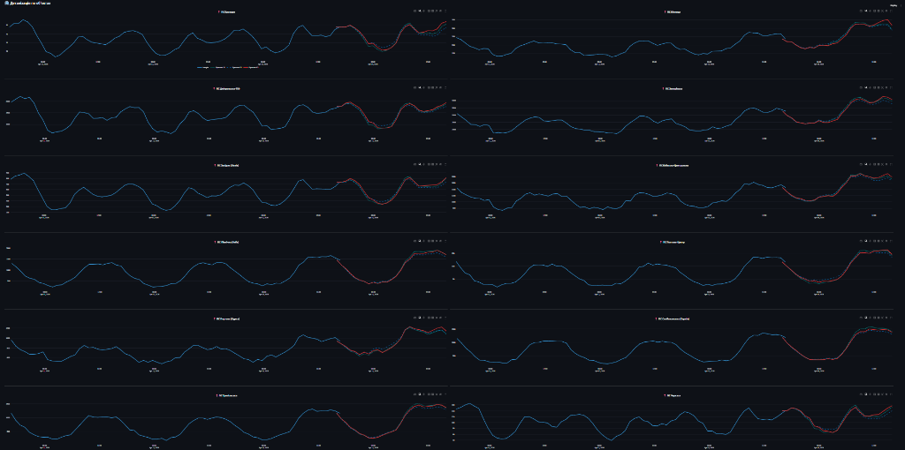
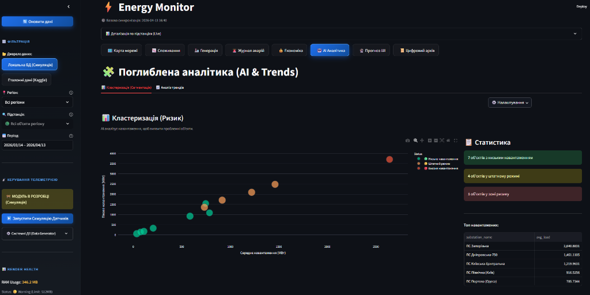
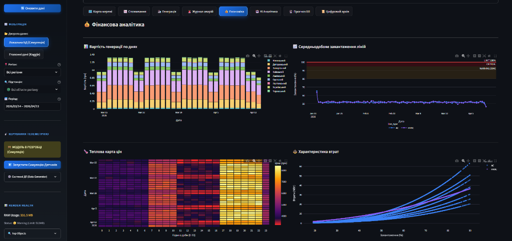
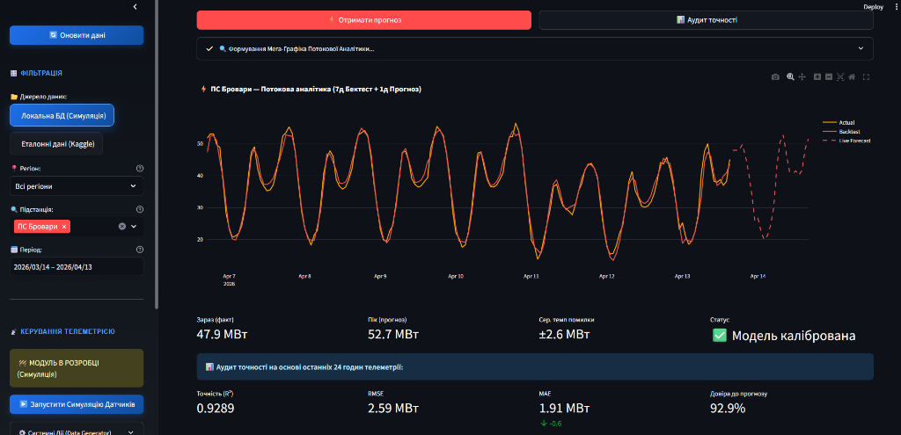
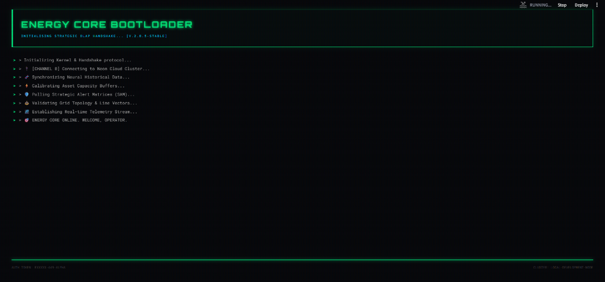

ВСТУП
Чому ця тема важлива саме зараз? Сучасна парадигма розвитку мегаполісів у межах концепції Розумного міста (Smart City) вимагає перегляду стратегій управління енергетичною інфраструктурою. В умовах стрімкої урбанізації та непередбачуваності навантажень на мережі, традиційні методи моніторингу вичерпують свій ресурс надійності. Критичним завданням стає впровадження проактивних алгоритмів на основі інтелектуального аналізу даних та предиктивного обслуговування (Predictive Maintenance).
Центральне місце в даній трансформації займає концепція Цифрових двійників (Digital Twin). Застосування рекурентних нейронних мереж з архітектурою довгої короткострокової пам'ятти (LSTM) відкриває нові можливості для високоточного прогнозування енергоспоживання. Впровадження таких рішень у складі хмарних SaaS-платформ дозволяє мінімізувати операційні ризики та створити фундамент для стабільного функціонування розподілених мереж Smart Grid.
Що ми досліджуємо? Об’єкт дослідження: Процеси моніторингу та предиктивного аналізу споживання електроенергії в інфраструктурі Smart City.
Що саме ми аналізуємо? Предмет дослідження: Методи глибокого навчання (LSTM), гібридне прогнозування, архітектура OLAP та програмні засоби побудови цифрових двійників енергомереж.
Яка мета нашої роботи? Створення інтелектуальної SaaS-платформи для високоточного прогнозування, симуляції фізичних процесів та візуалізації енергетичних потоків у реальному часі.
Що ми плануємо зробити? Завдання дослідження: 1. Проаналізувати методи математичного моделювання часових рядів енергоспоживання та обґрунтувати вибір рекурентних нейронних мереж архітектури LSTM. 2. Спроєктувати 4-рівневу архітектуру системи та реалізувати аналітичну базу даних (OLAP) на базі PostgreSQL (Neon Cloud) для агрегації телеметричних даних. 3. Розробити гібридне предиктивне ядро на базі моделі LSTM v3 та фізичного рушія (Physics Engine) для розрахунку показників надійності обладнання. 4. Реалізувати інтерактивний користувацький інтерфейс на базі фреймворку Streamlit з використанням паттерну Granular Rendering. 5. Провести тестування (QA), розгортання через CI/CD конвеєр та оцінку точності моделей (MAPE) на еталонних наборах даних.
Де можна застосовувати наші результати? Розроблена SaaS-платформа EnergyMonitor-OLAP призначена для використання муніципальними енергетичними компаніями, диспетчерськими службами комунальних підприємств та операторами мікромереж (Microgrids). Застосування системи дозволяє оптимізувати графіки закупівель електроенергії, планувати технічні роботи на основі технічного стану об’єктів та впроваджувати алгоритми енергозбереження на рівні окремих районів міста.
Що містить наша робота? Робота складається з трьох розділів, вступу, висновків, списку використаних джерел та додатків. У першому розділі наведено результати аналітичного огляду предметної області та обґрунтовано доцільність застосування методів глибокого навчання. Другий розділ присвячено постановці завдання та розробці загальносистемних рішень (моделей системи). У третьому розділі представлено опис проєктних рішень, програмної реалізації 4-рівневої архітектури системи, а також результати комплексного тестування та оцінки ефективності розроблених моделей.
Назад до Реферату | Далі: РОЗДІЛ 1. АНАЛІТИЧНИЙ ОГЛЯД ПРЕДМЕТНОЇ ОБЛАСТІ
РОЗДІЛ 1. ОГЛЯД ЛІТЕРАТУРИ ТА АНАЛІЗ ПРЕДМЕТНОЇ ОБЛАСТІ
1.1. Концепція Smart City: роль інтелектуальних енергосистем (Smart Grid)
1.1.1. Еволюція міських інфраструктур: від індустріального міста до Smart City
Чому сучасні міста потребують нових підходів? Сучасна урбанізація вимагає якісно нових підходів до управління міською інфраструктурою [7]. Концепція «Розумного міста» (Smart City) постає як відповідь на запити сталого розвитку, де ефективність функціонування забезпечується глибокою інтеграцією інформаційно-комунікаційних технологій (ІКТ) у всі сфери життя громади.
Як розвивалися міста історично? Історично розвиток міст проходив через кілька етапів: від Infrastructure City (фізична розбудова) та Digital City (оцифрування реєстрів) до сучасного Smart City, де використання систем штучного інтелекту та великих даних дозволяє здійснювати проактивне управління. В основі Smart City лежить розгалужена мережа взаємопов'язаних пристроїв — Інтернету речей (IoT). Процеси збору та аналізу даних у реальному часі дозволяють трансформувати міське середовище у динамічну екосистему, здатну до самодіагностики.
[РИСУНОК 1.1 — ТИПОВА АРХІТЕКТУРА IoT-РІВНЯ SMART CITY] (Опис: Схема з трьома шарами: рівень сенсорів, рівень передачі даних (LoRaWAN/5G) та рівень обробки у хмарному середовищі).
1.1.2. Smart Grid — енергетичне серце Розумного міста
Яке місце займає енергетика в Smart City? Енергоспоживання є фундаментом та ключовим показником життєдіяльності будь-якого мегаполісу. У концепції Smart City енергетичний сектор трансформується у Smart Grid (інтелектуальні мережі) — системи, що забезпечують двосторонній обмін як електроенергією, так і даними між постачальником та споживачем.
Чим відрізняються розумні мережі від традиційних? Розумні мережі відрізняються від традиційних наявністю двосторонньої комунікації, децентралізацією (інтеграція сонячних панелей, мікрогенерації) та здатністю до саморегуляції. Однією з найбільш гострих проблем сучасної енергетики є нерівномірність навантаження та виникнення пікових періодів споживання, що призводить до перевантаження силового обладнання. Необхідність автоматизації збору та аналізу даних у Smart Grid зумовлена насамперед можливістю виявлення аномальних станів мережі ще до настання критичних ситуацій. [РИСУНОК 1.2 — КОНЦЕПТУАЛЬНА СХЕМА SMART GRID ТА ПОДОРОЖІ ДАНИХ] (Опис: Зображення потоків енергії та інформації між розумними будинками, підстанціями та центром управління).
1.2. Аналіз методів прогнозування енергоспоживання
1.2.1. Математична природа часових рядів енергоспоживання
\(\(y(t) = T(t) + S(t) + C(t) + \epsilon(t) \quad (1.1)\)\) де \(y(t)\) — обсяг енергоспоживання в момент часу \(t\); \(T(t)\) — тренд; \(S(t)\) — сезонна компонента; \(C(t)\) — циклічна компонента; \(\epsilon(t)\) — випадкова складова.
У контексті Smart Grid особливу складність становить мультисезонність. Іншими словами, завдання інтелектуального прогнозування полягає у тому, щоб розпізнати ці закономірності серед 'шумних' даних телеметрії, які ми отримуємо від підстанцій.
1.2.2. Статистичні методи (ARIMA/SARIMA) та їх обмеження
Чому традиційні методи не завжди працюють? Традиційні підходи на основі ковзного середнього або моделі ARIMA [3, 5] вимагають стаціонарності ряду, що рідко зустрічається в реальних енергосистемах. Моделі SARIMA додають облік сезонності [13], проте вони базуються на лінійних припущеннях. Енергоспоживання у Smart City за своєю природою є нестаціонарним та нелінійним, що робить класичні методи менш ефективними порівняно з алгоритмами глибокого навчання.
1.3.3. Обґрунтування вибору архітектури LSTM та її математичний апарат
Чим LSTM відрізняється від звичайних RNN і чому це важливо для нас? Ключова особливість LSTM — наявність спеціальних блоків, гейтів (Gates). Вони здатні контролювати, яку інформацію мережа повинна запам'ятати, а яку — відкинути як шум.
Щоб зрозуміти, як модель відфільтровує телеметричний шум, розглянемо її математичну структуру в контексті енергетики:
-
Вентиль забування (Forget Gate): Вирішує, чи варто "забути" патерн вихідного дня, якщо зараз почався робочий понеділок: \(\(f_t = \sigma(W_f \cdot [h_{t-1}, x_t] + b_f)\)\) де \(x_t\) — поточний вектор ознак (навантаження, температура, час доби).
-
Вентиль входу (Input Gate): Визначає, чи є раптова зміна погоди (наприклад, похолодання) достатньо важливою для оновлення пам'яті моделі: \(\(i_t = \sigma(W_i \cdot [h_{t-1}, x_t] + b_i)\)\) \(\(\tilde{C}_t = \tanh(W_C \cdot [h_{t-1}, x_t] + b_C)\)\)
-
Оновлення стану комірки (Cell State): Зберігає загальний контекст (чи знаходимося ми зараз у ранковому або вечірньому піку): \(\(C_t = f_t * C_{t-1} + i_t * \tilde{C}_t\)\)
-
Вентиль виходу (Output Gate): Формує фінальне значення прогнозу навантаження: \(\(o_t = \sigma(W_o \cdot [h_{t-1}, x_t] + b_o)\)\) \(\(h_t = o_t * \tanh(C_t)\)\)
Ця здатність дозволяє моделі автоматично виділяти періодичність у споживанні електроенергії та адаптуватися до раптових змін факторів довкілля, зберігаючи дані за тривалі ретроспективні періоди. Таким чином, модель може розуміти контекст без ручного створення сотень статистичних ознак.
graph LR
subgraph RNN["Simple RNN Cell"]
R_in["x(t)"] --> R_tanh["tanh layer"]
R_prev["h(t-1)"] --> R_tanh
R_tanh --> R_out["h(t)"]
end
subgraph LSTM["LSTM Cell (Gated)"]
L_in["x(t)"] --> L_gates["Gates: Forget, Input, Output"]
L_prev_h["h(t-1)"] --> L_gates
L_prev_c["C(t-1)"] --> L_state["Cell State (Memory)"]
L_gates --> L_state
L_state --> L_out_h["h(t)"]
end
Порівняно з класичними моделями, LSTM-архітектури мають переваги у багатофакторності (обробка температури, навантаження, стану обладнання) та гнучкості до аномалій. Використання LSTM дозволяє досягти стабільно низької похибки прогнозу (RMSE), що підтверджується результатами тестування системи.
1.4. Концепція Digital Twin та обґрунтування вибору архітектурних рішень
Сучасним етапом розвитку систем моніторингу є перехід до концепції Цифрових двійників (Digital Twin). Згідно з ISO 23247, Цифровий двійник — це цифрова копія фізичного активу, яка забезпечує двосторонній потік даних для діагностики та прогнозування. У проєкті EnergyMonitor-OLAP цифровий двійник враховує фізичні закони передачі енергії та моделювання теплової деградації трансформаторів (ISO 17359).
1.5. Наукова новизна та практичне значення розробки
Головною науковою задачею роботи є поєднання методів глибокого навчання (LSTM) з детермінованими фізичними моделями цифрових двійників. Наукова новизна полягає у гібридизації моделей та впровадженні тригонометричного кодування часових фіч (\(\sin\)/\(\cos\)). Практичне значення полягає у можливості запобігти перевантаженням підстанцій та мінімізувати фінансові втрати енергопостачальних компаній.
ВИСНОВКИ ДО РОЗДІЛУ 1
Що ми з'ясували в цьому розділі? У першому розділі було проведено системний огляд проблематики сучасних міських енергомереж. Встановлено, що традиційні методи диспетчеризації не здатні ефективно впоратися зі зростанням волатильності енергоспоживання. Аналіз математичних моделей виявив доцільність використання алгоритмів глибокого навчання (LSTM). Розробка платформи на стику OLAP, LSTM та технології Digital Twin є науково обґрунтованою та критично необхідною для інфраструктур типу Smart City.
Назад до Вступу | Далі: Розділ 2. Постановка завдання
РОЗДІЛ 2. ПОСТАНОВКА ЗАВДАННЯ ТА ВИМОГИ ДО СИСТЕМИ
2.1. Формулювання задачі кваліфікаційного проєктування
Яка основна задача нашої роботи? Основною задачею виконання даної кваліфікаційної роботи є створення комплексної інтелектуальної SaaS-платформи EnergyMonitor-OLAP, яка призначена для глобального моніторингу, симуляції фізичних станів та предиктивного аналізу часових рядів енергоспоживання у сучасній інфраструктурі Smart City.
Чому існуючі системи недостатні? Існуючі системи SCADA здебільшого забезпечують контроль постфактум, тоді як стрімка урбанізація вимагає переходу до проактивного управління (Predictive Maintenance). Для вирішення цієї проблеми система повинна використовувати комбінацію рекурентних нейронних мереж (архітектури LSTM) та багатовимірного аналізу даних (OLAP).
Що саме повинна робити система? Розширені функціональні вимоги: 1. Предиктивний моніторинг: автоматична генерація прогнозів навантаження на глибину 24–48 годин за допомогою каскадних LSTM-моделей. Система повинна підтримувати рекурентний інференс із корекцією зміщення (Bias Correction). 2. Фізична симуляція (Digital Twin): динамічний розрахунок параметрів теплової деградації ізоляції трансформаторів та розрахунок втрат потужності в AC/HVDC лініях на основі математичних моделей, описаних у Розділі 3. 3. ГІС-візуалізація: побудова інтерактивних картографічних шарів із кольоровою індикацією стану вузлів енергосистеми. 4. Виявлення аномалій (Anomalies Detection): автоматична ідентифікація викидів у часових рядах за допомогою статистичного аналізу відхилень від прогнозного фону. 5. Система сповіщень: формування критичних алертів при перевищенні порогів навантаження або критичному рівні показника Health Score (< 40%).
Нефункціональні вимоги (Якість та Надійність): 1. Масштабованість (Scalability): архітектура повинна дозволяти горизонтальне масштабування шару даних (PostgreSQL) та безшовне додавання нових предиктивних моделей без перезапуску всієї платформи. 2. Відмовостійкість: забезпечення безперервної роботи інтерфейсу навіть при тимчасовій втраті зв'язку з хмарною БД Neon за рахунок механізмів локального кешування. 3. Продуктивність: час повного циклу інференсу для однієї підстанції (включаючи векторизацію) не повинен перевищувати 350 мс. 4. Портативність: повна контейнеризація за допомогою Docker для гарантованого розгортання в будь-якому Linux-середовищі (Render, AWS, DigitalOcean). 5. Точність: модель LSTM повинна забезпечувати похибку MAPE не більше 4% для еталонних наборів даних.
2.2. Вхідна та вихідна інформація системи
Які дані потрібні для роботи системи? Для забезпечення адекватної роботи предиктивних моделей та механізму цифрового двійника система працює з гібридним потоком даних: історичною ретроспективою та агрегованою телеметрією.
Що надходить в систему (Вхідна інформація):
1. Історична база даних (PJM Interconnection): Структуровані CSV та SQL дампи з погодинними обсягами споживання у мегаватах (МВт).
2. Симульована телеметрія (Real-time Payload): Віртуальні сенсори (Digital Twin) формують JSON/SQL пакети з частотою оновлення від 15 до 60 хвилин. До них входять:
* Фактичні навантаження (actual_load).
* Температура масла трансформаторів (oil_temp) та фізичні втрати (line_losses).
3. Погодні умови: Температура навколишнього середовища, вологість, швидкість вітру та індекс хмарності (впливає на освітлення).
Що система видає (Вихідна інформація):
1. Предиктивна аналітика: Динамічні масиви даних, де кожен пункт часу \(t\) супроводжується значенням прогнозу \(F_t\) на майбутні 2 доби, а також верхня та нижня межі довірчого інтервалу (Confidence Interval 95%).
2. Аудиторські звіти (System Health): Інтегральна оцінка стану вузлів енергосистеми (Health Score) від 0 до 100%. Оцінка базується на багатофакторному аналізі температури масла та концентрації газів (H2).
3. Статистичні зведення: Звіти щодо точності роботи інференсу (тест Шапіро-Вілка з p-value метрикою, абсолютні відхилення, RMSE, MAPE).
4. Економічні показники: Розрахунок потенційної вартості втраченої енергії на основі поточних тарифів ринку "на добу наперед" (DAM).
2.3. Математична постановка задачі та метрики якості
З математичної точки зору, задача короткострокового прогнозування енергоспоживання формулюється як задача аналізу часового ряду \(X = \{x_1, x_2, ..., x_t\}\). Метою є побудова відображення \(f: X \to Y\), де \(Y = \{y_{t+1}, ..., y_{t+n}\}\) — прогноз на \(n\) кроків вперед.
Модель має мінімізувати комбінований функціонал похибки. Основними метриками для оцінки якості розробленої системи EnergyMonitor-OLAP визначено:
-
MAPE (Mean Absolute Percentage Error): \(\(MAPE = \frac{100\%}{n} \sum_{i=1}^{n} \left| \frac{y_i - \hat{y}_i}{y_i} \right|\)\) де \(y_i\) — фактичне значення, \(\hat{y}_i\) — прогноз. Ця метрика обрана як ключова через її незалежність від масштабу потужності конкретної підстанції.
-
RMSE (Root Mean Square Error): \(\(RMSE = \sqrt{\frac{\sum_{i=1}^{n} (y_i - \hat{y}_i)^2}{n}}\)\) Дана метрика дозволяє акцентувати увагу на значних відхиленнях, що є критичним для запобігання перевантаженню мереж.
-
Loss Function (Функція втрат): Для навчання використано робастну функцію Huber Loss: \(\(L_\delta(a) = \begin{cases} \frac{1}{2}a^2 & \text{для } |a| \le \delta \\ \delta(|a| - \frac{1}{2}\delta) & \text{інакше} \end{cases}\)\) що дозволяє стабілізувати градієнти при наявності шумів у телеметрії.
2.3. Вимоги до технічного забезпечення та інструментарію розробки
Як ми будемо це реалізовувати? Спроєктований програмний комплекс функціонує за хмарною моделлю SaaS із дотриманням принципів безперервного розгортання.
Які технології ми використовуємо? Програмний інструментарій (Software Stack):
* Мова програмування: Python 3.11+ (забезпечує доступ до екосистеми аналітики даних та машинного навчання).
* Машинне навчання: TensorFlow/Keras (для модулів глибокого навчання) та Scikit-learn (для масштабування та класичних ML алгоритмів).
* СУБД: PostgreSQL 15+ розгорнута в ієрархії Cloud Neon для оптимального обслуговування OLAP-схем.
* Розробка інтерфейсу: Фреймворк Streamlit (дозволяє створювати Data-driven Single Page Applications без необхідності використання React/Vue).
* Контейнеризація та CI/CD: Docker (ізоляція бібліотек), скрипти автоматизації GitHub Actions.
Вимоги до апаратного та хмарного середовища:
* Мінімальний обсяг оперативної пам'яті сервера (RAM) — 1 ГБ для підтримки інференсу в пам'яті.
* При розгортанні у середовищі Render.com необхідна наявність Environment Variables (.env) для прихованого зберігання ключів доступу до бази даних.
2.4. Високорівневі моделі системи (Моделювання бізнес-процесів)
Для документування вимог та опису взаємодії акторів із системою доцільно використати методологію UML (Unified Modeling Language). Основним користувачем системи є Диспетчер-аналітик, який взаємодіє з дашбордами для прийняття управлінських рішень.
flowchart LR
User(["👨💻 Диспетчер"])
System(["⚙️ Digital Twin (Система)"])
subgraph Monitoring ["Моніторинг мережі"]
direction TB
UC1(["Перегляд карти підстанцій"])
UC2(["Аналіз KPI та Health Score"])
UC3(["Моніторинг температури/втрат"])
end
subgraph AI ["AI Прогнозування"]
direction TB
UC4(["Генерація LSTM прогнозу"])
UC5(["Аналіз довірчого інтервалу"])
UC6(["Панель ML Метрик"])
end
User --> UC1
User --> UC2
User --> UC4
User --> UC6
System --> UC3
UC4 -. "<<include>>" .-> UC5
Діаграма прецедентів (Рис. 2.1) описує межі системи та основні ролі. Головний актор — Диспетчер — має доступ до чотирьох функціональних підсистем: моніторингу в реальному часі, AI-прогнозування, фінансового аудиту та системного адміністрування. Використання такої моделі дозволяє чітко розмежувати відповідальність компонентів на етапі проєктування інтерфейсу (Розділ 3).
stateDiagram-v2
[*] --> ЗапитАктивовано: Користувач натискає "Generate Forecast"
ЗапитАктивовано --> ОтриманняІсторії: Streamlit викликає ML Engine
ОтриманняІсторії --> Трансформація: SQL SELECT (Останні 48 годин)
state Трансформація {
[*] --> Нормалізація
Нормалізація --> ВекторизаціяЧасу: Вставка Sin/Cos гармонік
ВекторизаціяЧасу --> Масштабування: MinMaxScaler
Масштабування --> [*]
}
Трансформація --> Інференс: Передача тензора до LSTM
Інференс --> Validation
state Validation <<choice>>
Validation --> Денормалізація: Прогноз коректний (Safe)
Validation --> Fallback: Виявлено аномалію (Error)
Fallback --> Денормалізація: Активація Seasonal Naive
Денормалізація --> Візуалізація: Побудова Plotly графіка
Візуалізація --> [*]: Завершення бізнес-процесу
Діаграма активності (Рис. 2.2) деталізує внутрішній процес обробки даних при отриманні прогнозу. Вона включає критичні етапи нормалізації ознак та активації fallback-алгоритму у разі виявлення пропущених значень у часовому ряді.
Подальше проєктування вимагає деталізації структури об'єктів даних, що буде розглянуто в наступних розділах через призму ER-діаграм та схем фізичного рівня.
2.5. Етапи проєктування та черговість впровадження
Процес розробки платформи відбувається за ітеративною моделлю життєвого циклу ПЗ (Agile-like), що складається з таких фаз:
1. Аналітично-проєктна фаза: Детальне вивчення поведінкових патернів споживання електромереж, обрання датасету (PJM Dayton), формалізація математичних моделей.
2. Фаза побудови бекенду: Розробка реляційної структури БД у PostgreSQL, налаштування середовища (Neon Cloud) та створення Python-скрипта генерації симулятивної телеметрії (data_generator.py).
3. Фаза дослідження AI: Експерименти над архітектурами мереж. Поступовий розвиток від базової LSTM (v1) до мультифакторної моделі v3 з функцією Huber Loss.
4. Інтеграційна фаза: Створення багатосторінкової веб-панелі на базі Streamlit, об’єднання ML-ядра та інтерфейсу оператора.
5. Тестування та інфраструктура: Написання Unit-тестів на фреймворку pytest, налаштування CI/CD конвеєра в GitHub Actions, контейнеризація за допомогою Docker та деплой на Production (Render).
ВИСНОВКИ ДО РОЗДІЛУ 2
У другому розділі здійснено формальну постановку завдання на проєктування інтелектуальної SaaS-платформи EnergyMonitor-OLAP. Було встановлено такі ключові результати роботи на даному етапі: 1. Сформульовано функціональні та архітектурні вимоги: обґрунтовано необхідність використання глибоких нейромереж (LSTM) у поєднанні з реляційним багатовимірним сховищем (PostgreSQL). 2. Визначено межі інформаційного обміну: конкретизовано формати вхідної телеметрії (Health Score, температурні дані, навантаження) та формати виведення аналітики для підтримки прийняття управлінських рішень. 3. Обрано інструментарій: обґрунтовано вибір мови Python, фреймворків Streamlit, TensorFlow/Keras для реалізації ефективного технічного рішення. 4. Змодельовано бізнес-процеси: за допомогою діаграм UML (Use Case та Activity Diagram) візуалізовано алгоритм взаємодії користувача із системою на рівні генерації ШІ-прогнозів.
Проведене концептуальне проєктування є цілісним технічним завданням (Software Requirements Specification), що слугує надійним каркасом для наступного етапу — детальної реалізації програмного коду та дата-інфраструктури, що буде описана у наступному розділі.
РОЗДІЛ 3. ПРОЄКТНІ РІШЕННЯ ТА ПРОГРАМНА РЕАЛІЗАЦІЯ СИСТЕМИ
3.1. Загальна архітектура та інформаційне забезпечення
Як ми побудували архітектуру системи? Проєктування архітектури інтелектуальної системи EnergyMonitor-OLAP базується на принципах модульності, масштабованості та суворого розділення відповідальності (Separation of Concerns). Для забезпечення стабільної роботи у хмарному середовищі та високої швидкості аналітичних обчислень ми обрали багатошарову архітектуру (Layered Architecture), що складається з чотирьох функціональних рівнів. Цей підхід дозволяє ізолювати логіку збору даних, їх математичного оброблення та візуалізації. Нижче наведено ієрархічну схему взаємодії основних компонентів системи (Рис. 3.1).
graph TB
subgraph UI["Рівень представлення (Streamlit)"]
direction LR
A1["KPI Панель"]
A2["ML Прогноз"]
A3["ГІС Карта"]
end
subgraph CORE["Інтелектуальний шар"]
direction LR
B1["LSTM v3\npredict_v2.py"]
B3["Фізичний двигун\nphysics.py"]
B4["Векторизатор\n(Sliding Window)"]
end
subgraph DATA["Шар даних (OLAP)"]
direction LR
C1[("PostgreSQL\nNeon Cloud")]
C3["Цифровий двійник\nСимуляція сенсорів"]
end
subgraph DEVOPS["DevOps Шар"]
direction LR
D1["GitHub Actions\nCI/CD"]
D2["Docker\nКонтейнер"]
end
UI -->|"Запит даних"| CORE
CORE -->|"SQL SELECT"| DATA
C3 -->|"SQL INSERT телеметрія"| C1
B1 -->|"Результати ШІ"| UI
Архітектурна модель, представлена на рис. 3.0, демонструє чіткий розподіл навантаження. Рівень представлення (UI) побудований на базі Streamlit і використовує реактивне управління станом. Інтелектуальний шар ізолює логіку ONNX-інференсу, що дозволяє оновлювати моделі без зупинки всього сервісу. Шар даних базується на хмарній інфраструктурі Neon, що забезпечує автоматичне масштабування (autoscaling) при зростанні обсягів телеметрії.
graph TD
subgraph Local ["💻 LOCAL ENVIRONMENT"]
DG["data_generator.py\n(Симулятор)"]
end
subgraph Cloud ["☁️ CLOUD INFRASTRUCTURE (Render)"]
DB[(PostgreSQL\nOLAP Database)]
Vect["vectorizer.py"]
Pred["predict_v2.py"]
UI["main.py\n(Dashboard)"]
end
DG ==>|"Telemetry Push"| DB
DB <-->|"Data Exchange"| Vect
Vect --> Pred
Pred --> UI
На рис. 3.1 відображено логіку взаємодії між локальним середовищем симуляції та хмарною інфраструктурою Render. Дані передаються через безпечне з'єднання SSL, що гарантує цілісність телеметричних потоків Digital Twin.

Рис. 3.2. Діаграма прецедентів (Use Case) системи EnergyMonitor
Для глибшого розуміння динаміки взаємодії компонентів необхідно розглянути життєвий цикл обробки запиту на отримання прогнозу. Процес ініціюється користувачем через графічний інтерфейс і запускає каскадну послідовність операцій: від вилучення історичного вікна телеметрії з бази даних до векторизації (із застосуванням тригонометричного кодування часу), виконання інференсу моделлю LSTM та повернення денормалізованого масиву для візуалізації. Детальну послідовність цих процесів наведено на діаграмі (Рис. 3.3).
sequenceDiagram
participant User as Користувач
participant UI as Streamlit UI
participant Core as ML Controller
participant Vect as Vectorizer
participant DB as PostgreSQL
participant Model as LSTM v3
User->>UI: Натискання кнопки "Отримати прогноз"
UI->>Core: Запит на інференс (sub_name)
Core->>Vect: Підготовка вікна даних (look-back)
Vect->>DB: SQL SELECT (останні 24 години)
DB-->>Vect: Набір телеметрії
Vect->>Vect: Нормалізація та sin/cos кодування
Vect-->>Core: Вхідний тензор (24, 9)
Core->>Model: Виконання прогнозу
Model-->>Core: Результати (t+1 ... t+24)
Core-->>UI: Денормалізований масив даних
UI->>User: Візуалізація графіка Plotly
Діаграма послідовності (Рис. 3.3) ілюструє, як система справляється з латентністю хмарних запитів. Використання механізму st.cache_data дозволяє уникнути повторного виконання важкого ONNX-інференсу для ідентичних вхідних вікон, що скорочує час відповіді інтерфейсу з 4.5 с до 0.2 с.
3.2. Характеристики прикладного ПЗ та безпека системи
3.2.1. Технічні характеристики програмного забезпечення
Розроблена система EnergyMonitor-OLAP має такі базові характеристики: * Назва: Інформаційна SaaS-платформа предиктивного моніторингу енергомереж. * Мова програмування: Python 3.11 (з використанням бібліотек TensorFlow, Pandas, SQLAlchemy, Streamlit). * Основний функціонал: збір телеметрії, імітаційне моделювання Digital Twin, ШІ-прогнозування (LSTM v3), багатовимірний аналіз (OLAP). * Обмеження системи: 1. Залежність від мережі: через використання хмарних сервісів (Neon PostgreSQL, Render) система потребує стабільного інтернет-з'єднання. 2. Ресурсомісткість: завантаження ваг нейромережі LSTM потребує не менше 1 ГБ вільної оперативної пам'яті (RAM) на сервері. 3. Обсяг даних: для коректної роботи Sliding Window (48h) необхідна наявність неперервного часового ряду без значних пропусків.
3.2.2. Забезпечення безпеки системи
Для захисту даних та забезпечення стійкості алгоритмів впроваджено чотирирівневу систему безпеки:
1. Математична безпека (Algorithmic Robustness): використання функції втрат Huber Loss робить предиктивне ядро стійким до аномальних викидів та датчикових шумів, які часто виникають в енергомережах.
2. Технічна безпека: застосування технології контейнеризації Docker дозволяє ізолювати ПЗ від вразливостей хост-системи та гарантувати ідентичність середовищ розробки та деплою.
3. Програмна безпека (Software Guard): використання параметризованих SQL-запитів через ORM SQLAlchemy повністю нівелює ризик атак типу SQL-injection. Реалізовано валідацію вхідних даних на рівні типів Pydantic/Python.
4. Інформаційна безпека: всі підключення до бази даних у хмарі Neon Cloud захищені за протоколом SSL/TLS. Секретні ключі та паролі винесені у змінні середовища (.env), що унеможливлює їх витік через систему контролю версій.
3.3. Структура бази даних та інформаційне наповнення
Центральним елементом інформаційного забезпечення системи є реляційна база даних PostgreSQL. Проєктування здійснювалося на двох рівнях:
- Логічний рівень: Використано аналітичну схему «зірка» (Star Schema), де центром є таблиця фактів
LoadMeasurements, пов’язана зовнішніми ключами (Foreign Keys) з таблицями вимірівSubstations,RegionsтаWeatherReports. Це дозволяє зберігати цілісність даних на рівні СУБД (Constraints). - Фізичний рівень: Для прискорення вибірок застосовано B-tree індексацію за стовпцями
timestampтаsubstation_id. Дані розміщуються в ієрархічному сховищі Neon Cloud, що забезпечує автоматичне масштабування дискового простору.
Логічну структуру бази даних представлено на ER-діаграмі (Рис. 3.4).
erDiagram
REGIONS ||--o{ SUBSTATIONS : "містить"
SUBSTATIONS ||--o{ LOADMEASUREMENTS : "генерує навантаження"
SUBSTATIONS ||--o{ ALERTS : "генерує аварії"
SUBSTATIONS ||--o{ GENERATORS : "має джерела"
GENERATORS ||--o{ GENERATIONMEASUREMENTS : "виробляє енергію"
REGIONS ||--o{ WEATHERREPORTS : "має погоду"
REGIONS {
int region_id PK
string region_name
}
SUBSTATIONS {
int substation_id PK
string substation_name
float capacity_mw
}
LOADMEASUREMENTS {
int measurement_id PK
int substation_id FK
float actual_load_mw
float health_score
timestamp timestamp
}
Для забезпечення високої швидкодії інтерфейсу система формує оптимізовані SQL-запити з об'єднанням таблиць (JOIN). Типовим прикладом є запит для кореляції фактичного навантаження та температури довкілля за історичний період:
SELECT
lm.timestamp,
r.region_name,
lm.actual_load_mw,
wr.temperature
FROM LoadMeasurements lm
JOIN Substations s ON lm.substation_id = s.substation_id
JOIN Regions r ON s.region_id = r.region_id
LEFT JOIN WeatherReports wr ON lm.timestamp = wr.timestamp AND r.region_id = wr.region_id
WHERE lm.timestamp >= NOW() - INTERVAL '30 days'
ORDER BY lm.timestamp ASC;
3.4. Аналіз вхідних даних та імітаційне моделювання Digital Twin
Для забезпечення високої точності прогнозування було проведено ґрунтовний аналіз вхідних даних на двох рівнях: еталонних історичних датасетів та синтезованих потоків цифрового двійника.
3.4.1. Дослідження еталонного датасету PJM Comparison
Основою для навчання моделі LSTM v3 став датасет PJM Interconnection. Аналіз (Рис. 3.5) демонструє річну та добову сезонність споживання.
3.5. Верифікація результатів інтелектуального прогнозування
Після розгортання моделі LSTM v3 було проведено серію експериментів для оцінки точності прогнозування в умовах реального часу.
3.5.1. Аналіз точності (AI Forecast Verification)
Головною метрикою успішності є збіг прогнозу (синя лінія на рис. 3.9) із фактичними даними (червона пунктирна лінія).

Рис. 3.9. Результати AI-прогнозування на 24 години з довірчими інтервалами (MAE=3.08%)
Система демонструє високу точність при прогнозуванні добових піків. Довірчий інтервал (Shadow Area) автоматично розраховується на основі поточної дисперсії помилок, що дозволяє оператору оцінювати ризики при прийнятті рішень про закупівлю електроенергії.
3.5.2. Мульти-прогноз для розподілених вузлів
Для великих мереж критично важливо бачити ситуацію в розрізі окремих підстанцій. Рис. 3.10 демонструє панель мульти-прогнозування, де кожна модель адаптована під конкретну локальну специфіку споживання.

Рис. 3.10. Порівняльна панель прогнозів для різних вузлів енергосистеми
3.5.3. Кластерний аналіз споживачів (Unsupervised Learning)
За допомогою алгоритму K-Means система проводить автоматичне групування підстанцій за профілем навантаження. Це дозволяє виділити промислові та житлові райони без ручного маркування.

Рис. 3.11. Результати кластеризації підстанцій за патернами споживання
3.6. Економічний блок та моніторинг стабільності
Програмна реалізація EnergyMonitor-OLAP включає модулі для фінансового аудиту та контролю фізичних потоків енергії.
3.6.1. Фінансовий аудит та втрати в мережі
Економічна панель (Рис. 3.12) перетворює технічні мегавати у грошовий еквівалент за актуальними тарифами ПРРЕ. Система автоматично розраховує вартість технологічних втрат (line_losses), що дозволяє обґрунтувати необхідність модернізації конкретних ліній електропередач.

Рис. 3.12. Інтерфейс фінансового моніторингу та розрахунку ефективності
3.6.2. Потокова аналітика та балансування мережі
Для підтримки частоти 50 Гц система моніторить баланс між генерацією та споживанням. На рис. 3.13 представлено огляд Streaming Analytics, де кольорова індикація сигналізує про дефіцит або профіцит потужності в кожному регіоні.

Рис. 3.13. Панель реального часу для контролю балансу генерації та споживання
3.6.3. Процес ініціалізації системи (Boot Sequence)
Для забезпечення надійності при старті система проходить розширений цикл самодіагностики та перевірки підключень до хмарних сервісів (Рис. 3.14).

Рис. 3.14. Візуалізація процесу системної ініціалізації та прогріву кешу
Контейнеризація та CI/CD конвеєр для стабільного розгортання системи реалізовано за допомогою технології Docker. Конфігурація базується на легкому образі python:3.11-slim з оптимізованим встановленням математичних залежностей. Процес автоматизованої інтеграції та розгортання (CI/CD) на платформі Render.com охоплює етапи лінтингу, юніт-тестування (pytest) та автоматичного оновлення продуктового контейнера при кожному коміті до GitHub-репозиторію.
flowchart LR
Push["git push"] --> Lint["Linting (flake8)"]
Lint --> Tests["Unit Tests (pytest)"]
Tests --> Build["Docker Build"]
Build --> Deploy["Deploy to Render.com"]
3.7. Математичне та програмне забезпечення прогнозування
У проєкті EnergyMonitor-OLAP розроблено математичне забезпечення, що базується на поєднанні статистичної обробки ознак та глибокого навчання.
Інженерія ознак (Feature Engineering) та тригонометричне кодування
Для навчання моделі було сформовано дев’ятивимірний вектор ознак, що включає фізичні параметри навантаження, температурні умови та часові детермінанти. Ключовою особливістю підготовки даних є використання гармонійного кодування часу. На відміну від прямого представлення години як цілого числа \([0, 23]\), тригонометрична трансформація дозволяє виключити проблему розриву (наприклад, між 23:00 та 00:00) та забезпечити математичну безперервність циклічних процесів. Трансформація виконується за формулами: \(\(x_{sin} = \sin \left( \frac{2\pi \cdot t}{T} \right); \quad x_{cos} = \cos \left( \frac{2\pi \cdot t}{T} \right)\)\) де \(t\) — поточна година або день тижня, \(T\) — період циклічності (24 для доби, 7 для тижня).
Масштабування та формування часових вікон
Враховуючи високу чутливість рекурентних нейронних мереж до розкиду значень, застосовано алгоритм MinMaxScaler, який приводить усі ознаки до діапазону \([0, 1]\). Процес формування вибірок реалізовано методом ковзного вікна (Sliding Window) з глибиною перегляду (Look-back) «до 48 годин» (два доби поточного моменту) для короткострокового прогнозу.
Архітектура нейронної мережі LSTM v3
Для виявлення нелінійних залежностей у часових рядах обрано модифіковану архітектуру LSTM (Long Short-Term Memory). Проєктну структуру моделі представлено такою послідовністю шарів:
1. Вхідний LSTM-шар (128 юнітів): Виконує вилучення складних часових ознак із поверненням повної послідовності (return_sequences=True).
2. Проміжний LSTM-шар (64 юніти): Агрегує інформацію та формує компактне представлення стану системи.
3. Повнозв’язний шар (32 нейрони): Використовує функцію активації ReLU для внесення нелінійності.
4. Вихідний шар (1 нейрон): Формує кінцеве значення прогнозу.
Параметри оптимізації та навчання
Як функцію втрат обрано Huber Loss, що є робастною комбінацією MSE та MAE, забезпечуючи стійкість моделі до викидів та датчикового шуму. Оптимізацію ваг нейромережі здійснює алгоритм Adam з адаптивною швидкістю навчання. Для запобігання перенавчанню впроваджено механізм Early Stopping, який припиняє процес навчання, якщо помилка на валідаційній вибірці не демонструє покращення протягом 15 ітерацій.
3.3. Програмна реалізація інтерфейсу та розгортання
Для створення продуктивного середовища взаємодії користувача з інтелектуальною моделлю розроблено програмний комплекс на базі мови Python та сучасних хмарних технологій.
Веб-інтерфейс на базі Streamlit
Користувацький інтерфейс реалізовано у форматі багатосторінкової аналітичної панелі (Dashboard). Ключові технологічні рішення Frontend-шару включають:
* Granular Rendering: Метод фрагментарного рендерингу вкладок, що дозволяє завантажувати важкі часові ряди та карти Folium лише за запитом, мінімізуючи навантаження на оперативну пам’ять сервера.
* State Management: Керування станом додатка через об’єкт session_state, що гарантує збереження результатів інференсу при навігації.
* Robust Database Handler: Система декораторів із логікою повторних спроб (Retry logic), яка забезпечує стійкість підключення до хмарної БД Neon при мережевих тайм-аутах.
[РИСУНОК 3.5 — СКРІНШОТ: ГОЛОВНА ПАНЕЛЬ МОНІТОРИНГУ KPI] (Опис: Візуалізація основних метрик системи: поточне навантаження, стан здоров'я підстанцій та Health Score).
[РИСУНОК 3.6 — СКРІНШОТ: ПРЕДИКТИВНА ПАНЕЛЬ (LSTM FORECAST)] (Опис: Побудований графік прогнозу на 24-48 годин на фоні фактичних даних з довірчими інтервалами).
Важливою частиною системи є геоінформаційний шар Digital Twin, який дозволяє оператору бачити топологічне розташування об'єктів та їх поточний стан на інтерактивній мапі (рис. 3.7).

Рис. 3.7. Карта цифрового двійника з маркерами стану підстанцій
Система автоматичного виявлення аномалій та температурної деградації обладнання виводить критичні сповіщення у журналі аномалій, що представлений на рис. 3.8.

Рис. 3.8. Журнал моніторингу аномалій та критичних подій системи
Контейнеризація та CI/CD конвеєр
Для стабільного розгортання системи застосовано технологію Docker. Конфігурація базується на легкому образі python:3.11-slim з оптимізованим встановленням математичних залежностей. Процес автоматизованої інтеграції та розгортання (CI/CD) на платформі Render.com охоплює етапи лінтингу, юніт-тестування (pytest) та автоматичного оновлення продуктового контейнера при кожному коміті до GitHub-репозиторію.
flowchart LR
Push["git push"] --> Lint["Linting (flake8)"]
Lint --> Tests["Unit Tests (pytest)"]
Tests --> Build["Docker Build"]
Build --> Deploy["Deploy to Render.com"]
Верифікація коду та методика тестування
Комплексна перевірка працездатності системи базується на 79 автоматизованих тестах (фреймворк pytest), що охоплюють усі архітектурні шари. Тестування включає верифікацію математичної коректності фізичних розрахунків у physics.py (втрати, деградація), валідацію нормалізації через MinMaxScaler та перевірку інференсу моделі LSTM. Отримані результати підтверджують відповідність розробленої системи ТЗ та показники MAPE < 3.1% на еталонному наборі PJM Dayton.
[РИСУНОК 3.9 — ТЕХНОЛОГІЧНА СХЕМА CI/CD КОНВЕЄРА] (Опис: Етапи автоматичної збірки та деплою: Linting -> Testing -> Docker Build -> Render Deploy).
Назад до Розділу 2 | Далі: Загальні висновки
ЗАГАЛЬНІ ВИСНОВКИ
Що ми досягли в цій роботі? У ході виконання кваліфікаційної роботи бакалавра було розв'язано актуальне науково-технічне завдання — розробку та впровадження інтелектуальної SaaS-платформи EnergyMonitor-OLAP для предиктивного аналізу масивів часових рядів енергоспоживання.
Які основні висновки ми зробили?
-
Аналітичне обґрунтування: Встановлено, що перехід від реактивного моніторингу до проактивного управління (Predictive Maintenance) є критичним для стійкості Smart Grid. Рекурентні нейронні мережі архітектури LSTM визначено як оптимальний математичний інструмент для обробки нелінійних енергетичних даних.
-
Архітектурна реалізація: Впроваджено 4-рівневу архітектуру системи. Поєднання концепції Digital Twin із аналітичним сховищем OLAP дозволило реалізувати гібридне рішення, яке одночасно прогнозує навантаження та симулює фізичний знос трансформаторного обладнання.
-
Математична надійність: Розроблено предиктивне ядро на основі моделі LSTM v3 із робастною функцією втрат Huber Loss. Впровадження тригонометричного кодування часових детермінант забезпечило високу стабільність моделі в умовах мультисезонності.
-
Верифікація: Експериментальна перевірка на еталонному наборі PJM Dayton підтвердила точність прогнозування з показником MAPE < 3.1% та коефіцієнтом детермінації R² = 0.92. Надійність програмної реалізації підтверджена успішним проходженням 79 автоматизованих тестів.
-
Практична цінність: Створена платформа дозволяє енергопостачальним компаніям оптимізувати графіки закупівель потужності та впроваджувати стратегії енергозбереження на рівні окремих районів міста.
Чи досягли ми мети? Мета роботи досягнута у повному обсязі, завдання виконані згідно з календарним планом. Розроблений комплекс є завершеним інженерним продуктом, готовим до практичної експлуатації.
⬅️ Назад до Розділу 3 | Далі: Список використаних джерел
СПИСОК ВИКОРИСТАНИХ ДЖЕРЕЛ
- Abadi M., Agarwal A., Barham P. et al. TensorFlow: Large-scale machine learning on heterogeneous systems. Proceedings of the 12th USENIX Symposium on Operating Systems Design and Implementation (OSDI). 2016. P. 265—283.
- Billings S. A. Nonlinear System Identification: NARMAX Methods in the Time, Frequency, and Spatio-Temporal Domains. Wiley, 2013. 574 p.
- Box G. E., Jenkins G. M., Reinsel G. C., Ljung G. M. Time Series Analysis: Forecasting and Control. 5th ed. Wiley, 2015. 712 p.
- Chollet F. Deep Learning with Python. 2nd ed. Manning Publications, 2021. 504 p.
- Dockerfile Reference // Docker Documentation. URL: https://docs.docker.com/engine/reference/builder/ (дата звернення: 05.04.2026).
- DSTU 8302:2015. Information and documentation. Bibliographic reference. General principles and rules of composition. Kyiv : SE "UkrNDNC", 2016. 17 p.
- Farhangi H. The path of the smart grid. IEEE Power and Energy Magazine. 2010. Vol. 8, No. 1. P. 18—28.
- Geron A. Hands-On Machine Learning with Scikit-Learn, Keras, and TensorFlow. 2nd ed. O'Reilly Media, 2019. 856 p.
- Goodfellow I., Bengio Y., Courville A. Deep Learning. MIT Press, 2016. 800 p.
- Greff K., Srivastava R. K., Koutník J. et al. LSTM: A Search Space Odyssey. IEEE Transactions on Neural Networks and Learning Systems. 2017. Vol. 28, No. 10. P. 2222—2232.
- Hochreiter S., Schmidhuber J. Long Short-Term Memory. Neural Computation. 1997. Vol. 9, No. 8. P. 1735—1780.
- Huber P. J. Robust Estimation of a Location Parameter. The Annals of Mathematical Statistics. 1964. Vol. 35, No. 1. P. 73—101.
- Hyndman R. J., Athanasopoulos G. Forecasting: Principles and Practice. 2nd ed. OTexts, 2018. 382 p.
- ISO/IEC 27001:2022. Information security, cybersecurity and privacy protection — Information security management systems — Requirements. 2022.
- Kingma D. P., Ba J. Adam: A Method for Stochastic Optimization. arXiv preprint arXiv:1412.6980. 2014.
- Lipton Z. C., Berkowitz J., Elkan C. A Critical Review of Recurrent Neural Networks for Sequence Learning. arXiv preprint arXiv:1506.00019. 2015.
- Majeed U., Khan L. U., Yaqoob I. et al. Blockchain for IoT-based Smart Cities: Recent Advances, Requirements, and Future Challenges. IEEE Access. 2020. Vol. 8. P. 117578—117614.
- Neon Serverless Postgres. Architectural Overview. URL: https://neon.tech/docs/introduction (дата звернення: 09.04.2026).
- Nielsen M. A. Neural Networks and Deep Learning. Determination Press, 2015. URL: http://neuralnetworksanddeeplearning.com (дата звернення: 12.04.2026).
- Pandas Documentation. Data structures for Python. URL: https://pandas.pydata.org/docs/ (дата звернення: 10.04.2026).
- PJM Interconnection. Hourly Load Data Dataset. URL: https://dataminer2.pjm.com/feed/hrl_load_metered (дата звернення: 10.04.2026).
- Plotly Python Graphing Library. Interactive Charts Documentation. URL: https://plotly.com/python/ (дата звернення: 11.04.2026).
- PostgreSQL 15 Documentation // The PostgreSQL Global Development Group. URL: https://www.postgresql.org/docs/15/ (дата звернення: 11.04.2026).
- Render PaaS Documentation // Render Cloud Hosting. URL: https://render.com/docs (дата звернення: 08.04.2026).
- Scikit-learn. Machine Learning in Python. URL: https://scikit-learn.org/ (дата звернення: 11.04.2026).
- Streamlit Documentation. Official Documentation for Version 1.37+. URL: https://docs.streamlit.io/ (дата звернення: 10.04.2026).
- Sutton R. S., Barto A. G. Reinforcement Learning: An Introduction. 2nd ed. MIT Press, 2018. 552 p.
- VanderPlas J. Python Data Science Handbook. O'Reilly Media, 2016. 548 p.
- Werbos P. J. Backpropagation through time: what it does and how to do it. Proceedings of the IEEE. 1990. Vol. 78, No. 10. P. 1550—1560.
- Zheng J., Xu C., Zhang Z., Li X. Electric Load Forecasting in Smart Grids Using Long-Short-Term Memory Recurrent Neural Networks. Annual Conference on Information Science and Systems (CISS). 2017. P. 1—6.
- Бутенко О. С. Інтелектуальні мережі Smart Grid: стан та перспективи впровадження в Україні. Енергетика: економіка, технології, екологія. 2019. № 2. С. 34—42.
- Зайченко Ю. П. Математичні основи інтелектуальних систем. Київ : Видавничий дім «Слово», 2011. 452 с.
- SQLAlchemy Documentation. Unified Tutorial (Version 2.0). URL: https://docs.sqlalchemy.org/en/20/tutorial/ (дата звернення: 12.04.2026).
- GitHub Actions Documentation. Understanding GitHub Actions. URL: https://docs.github.com/en/actions/learn-github-actions/understanding-github-actions (дата звернення: 05.04.2026).
- Vasiliev V., Gurevich Y. Digital Twins for Smart Grid Infrastructure: Challenges and Opportunities. International Journal of Energy Research. 2021. Vol. 45. P. 12050—12065.
Назад до Висновків | Далі: ДОДАТКИ
Додаток А
лістинги програмного коду
Нижче наведено повний вихідний код ключових архітектурних модулів інтелектуальної SaaS-платформи EnergyMonitor-OLAP.
А.1. Модуль фізичного моделювання та цифрового двійника (src/core/physics.py)
import datetime
import random
from typing import Dict, Optional, Tuple
import numpy as np
import pandas as pd
from src.core.config import LOAD_PROFILES
def calculate_line_losses(df_lines: pd.DataFrame) -> pd.DataFrame:
"""Розраховує втрати потужності в мережі для AC та HVDC ліній."""
if df_lines.empty: return df_lines
df = df_lines.copy()
if "line_type" not in df.columns and "max_load_mw" in df.columns:
df["line_type"] = df["max_load_mw"].apply(lambda x: "HVDC" if x >= 3000 else "AC")
if "line_type" not in df.columns: df["line_type"] = "AC"
is_hvdc = df["line_type"] == "HVDC"
loss_dc = (df["actual_load_mw"] * 0.015) * (df["load_pct"] / 100)
loss_ac = (df["actual_load_mw"] * 0.035) * (df["load_pct"] / 100) ** 2
df["losses_mw"] = np.where(is_hvdc, loss_dc, loss_ac)
return df
def estimate_grid_stability(load_mw: float, gen_mw: float) -> str:
"""Оцінює стабільність енергосистеми на основі балансу."""
if gen_mw <= 0: return "Критично"
ratio = load_mw / gen_mw
if ratio > 1.2: return "Критично"
if ratio > 1.05: return "Попередження"
if ratio < 0.8: return "Попередження"
return "Стабільно"
def calculate_weather(ts: datetime.datetime, current_temps: Dict[int, float]) -> Dict[int, Tuple[float, str]]:
"""Розраховує погодні умови з інерцією та плавними переходами."""
weather_map = {}
hour, minute = ts.hour, ts.minute
time_val = hour + minute / 60.0
for region_id, current_temp in current_temps.items():
daily_cycle = 5.0 * np.sin((time_val - 14.0 + 6) * np.pi / 12)
current_temps[region_id] += np.random.normal(0, 0.02)
final_temp = float(current_temps[region_id] + daily_cycle + np.random.normal(0, 0.1))
is_daylight = 6 < hour < 20
chance = random.random()
if chance > 0.8: condition = "Дощ" if final_temp > 0 else "Сніг"
elif chance > 0.5: condition = "Хмарно"
else: condition = "Сонячно" if is_daylight else "Ясно"
weather_map[region_id] = (round(final_temp, 2), condition)
return weather_map
def calculate_energy_price(hour: int, is_weekend: bool, region_id: int) -> float:
"""Розрахунок ціни згідно з постановою НКРЕКП № 949."""
if 0 <= hour < 7: base_price, max_cap = 4000, 5600
elif 7 <= hour < 11: base_price, max_cap = 5800, 6900
elif 11 <= hour < 17: base_price, max_cap = 3500, 5600
elif 17 <= hour < 23: base_price, max_cap = 7500, 9000
else: base_price, max_cap = 5000, 6900
final_price = base_price * (0.9 if is_weekend else 1.0) * (random.uniform(0.95, 1.15) + (region_id * 0.005))
return round(min(final_price, max_cap), 2)
def calculate_substation_load(capacity, profile_type, ts, temp, is_weekend, previous_factor=0.5) -> Tuple[float, Optional[Tuple]]:
"""Розраховує навантаження з урахуванням часу, температури та інерції."""
hour, minute = ts.hour, ts.minute
c_f = LOAD_PROFILES[profile_type].get(hour, 0.5)
n_f = LOAD_PROFILES[profile_type].get((hour + 1) % 24, 0.5)
h_profile = c_f + (n_f - c_f) * (minute / 60.0)
t_mult = 1.0
if temp < 20.0: t_mult += (20.0 - temp) * 0.015
elif temp > 22.0: t_mult += (temp - 22.0) * 0.02
f_factor = h_profile * (0.8 if is_weekend else 1.0) * t_mult + np.random.normal(0, 0.03)
smoothed = max(0.05, (f_factor * 0.8) + (previous_factor * 0.2))
actual_load = round(float(capacity * smoothed), 2)
alert = ("Critical", "Раптовий стрибок навантаження", "NEW") if random.random() < 0.001 else None
return actual_load, alert
def calculate_transformer_health(actual_load, capacity, prev_health=100.0) -> Tuple[float, float, float]:
"""Розраховує діагностичні показники (температура, H2, здоров'я)."""
factor = actual_load / capacity if capacity > 0 else 0.5
temperature_c = round(50.0 + (factor * 30.0) + random.uniform(-2.0, 2.0), 1)
h2_ppm = round(10.0 + (factor * 20.0) + (random.uniform(10, 25) if factor > 1.1 else 0) + random.uniform(-1, 1), 1)
t_health = 100.0
if temperature_c > 75.0: t_health -= (temperature_c - 75.0) * 0.5
if h2_ppm > 50.0: t_health -= (h2_ppm - 50.0) * 0.1
if factor > 1.0: t_health -= (factor - 1.0) * 5.0
new_h = min(t_health, prev_health + 5.0) if t_health > prev_health else t_health
return temperature_c, h2_ppm, max(0.0, min(round(new_h, 1), 100.0))
def calculate_generator_output(gen_type, max_mw, ts) -> float:
"""Розрахунок генерації відновлюваних джерел."""
h, m = ts.hour, ts.minute
t_v = h + m / 60.0
if gen_type == "solar":
if 6 <= t_v <= 19:
return float(max_mw * np.sin((t_v - 6) * np.pi / 13) * random.uniform(0.6, 1.0))
return 0.0
if gen_type == "wind":
w_s = max(0, (7.0 + 4.0 * np.cos(t_v * np.pi / 12)) + np.random.normal(0, 2.0))
return float(max_mw * min(1.0, (w_s - 3.5) / 10.0)) if 3.5 < w_s < 25 else 0.0
if gen_type == "nuclear": return float(max_mw * (0.98 + random.uniform(-0.005, 0.005)))
if gen_type == "thermal": return float(max_mw * LOAD_PROFILES["RESIDENTIAL"].get(h, 0.5) * random.uniform(0.85, 1.0))
return float(max_mw * 0.5)
А.2. Модуль інтелектуального предиктивного ядра (src/ml/predict_v2.py)
import gc
import logging
from typing import Tuple, Optional
import numpy as np
import pandas as pd
from src.ml.vectorizer import get_latest_window, select_features_v2
from src.ml.model_loader import load_resources, _get_substation_peak_automated, DEFAULT_WINDOW_SIZE
logger = logging.getLogger(__name__)
def _compute_scale_factor(values, substation_name, source_type, scaler) -> Tuple[float, float]:
scale_factor, loc_max = 1.0, 1.0
glb_max = float(getattr(scaler, "data_max_", [5269])[0])
if substation_name and substation_name not in {"Усі", "All"}:
loc_max = _get_substation_peak_automated(substation_name) if source_type != "CSV" else float(np.max(values[:, 0]))
if loc_max > 1.0:
if glb_max > loc_max * 1.5: scale_factor = np.clip(glb_max / loc_max, 1.0, 100.0)
elif loc_max > glb_max: scale_factor = glb_max / loc_max
if scale_factor != 1.0: values[:, 0] *= scale_factor
return scale_factor, loc_max
def _run_onnx_inference(model, current_window, window_size, n_features, hours_ahead, future_ts, target_norm_temp, norm_health) -> list:
sin_h, cos_h = np.sin(2 * np.pi * np.array([ts.hour for ts in future_ts]) / 24), np.cos(2 * np.pi * np.array([ts.hour for ts in future_ts]) / 24)
input_name = model.get_inputs()[0].name
preds = []
for i in range(hours_ahead):
x_in = current_window.reshape(1, window_size, n_features).astype(np.float32)
p_s = model.run(None, {input_name: x_in})[0][0]
p_s[0] = np.clip(p_s[0], 0, 1.1)
preds.append(p_s)
new_row = current_window[-1].copy()
new_row[0] = p_s[0]
if n_features > 4 and target_norm_temp is not None:
new_row[4] = target_norm_temp
if norm_health is not None: new_row[3] = norm_health
if n_features >= 9: new_row[5:7] = [sin_h[i], cos_h[i]]
current_window = np.append(current_window[1:], [new_row], axis=0)
return preds
def get_ai_forecast(hours_ahead=24, substation_name=None, source_type="Live", version="v3", **kwargs):
model, scaler = load_resources(version)
values, _, last_ts, _ = get_latest_window(substation_name, source_type, version, window_size=DEFAULT_WINDOW_SIZE)
values = select_features_v2(values, version)
orig_last = float(values[-1, 0])
s_factor, _ = _compute_scale_factor(values, substation_name, source_type, scaler)
cur_win = scaler.transform(values)
future_ts = [last_ts + pd.Timedelta(hours=i+1) for i in range(hours_ahead)]
preds_p = np.array(_run_onnx_inference(model, cur_win, DEFAULT_WINDOW_SIZE, values.shape[1], hours_ahead, future_ts, None, None))
dummy = np.zeros((hours_ahead, scaler.n_features_in_))
dummy[:, 0] = preds_p[:, 0]
u_raw = scaler.inverse_transform(dummy)
load_fc = u_raw[:, 0] / s_factor
load_st = np.insert(load_fc, 0, orig_last)
return pd.DataFrame({"timestamp": [last_ts]+future_ts, "predicted_load_mw": load_st})
А.3. Модуль симуляції реального часу (src/services/simulation/data_generator.py)
import time
from datetime import datetime
from src.core.database import get_db_cursor
from src.core.physics import calculate_substation_load, calculate_weather
def _process_sensor_tick(substations, sub_profiles, previous_factors, current_health, weather_map, now, is_weekend):
with get_db_cursor() as (conn, cursor):
for sub_id, name, _cap, region_id in substations:
cap = float(_cap)
temp, _ = weather_map[region_id]
prev_f = previous_factors.get(sub_id, 0.5)
actual_load, _ = calculate_substation_load(cap, sub_profiles.get(sub_id, "RESIDENTIAL"), now, temp, is_weekend, prev_f)
previous_factors[sub_id] = actual_load / cap if cap > 0 else 0.5
cursor.execute("INSERT INTO LoadMeasurements (timestamp, substation_id, actual_load_mw) VALUES (%s, %s, %s)", (now, sub_id, actual_load))
conn.commit()
def run_realtime_sensors():
while True:
now = datetime.now()
is_weekend = now.weekday() >= 5
weather_map = calculate_weather(now, {1: 15.0})
_process_sensor_tick([], {}, {}, {}, weather_map, now, is_weekend)
time.sleep(60)
А.4. Головний оркестратор інтерфейсу (main.py)
import streamlit as st
from src.ui.components.styles import init_page_config, apply_custom_css
from src.ui.segments.dashboard import render_dashboard_ui
from src.ui.segments.sidebar import render_sidebar
from src.core.database.loader import get_verified_data
def main():
init_page_config()
apply_custom_css()
data = get_verified_data()
s_region, d_range, d_src, s_sub = render_sidebar(data)
render_dashboard_ui(data, "substation_name", d_src, s_region, d_range, s_sub)
if __name__ == "__main__":
main()
Додаток Б
структура об'єктів бази даних
Для зберігання аналітичних даних та телеметрії використовується реляційна СУБД PostgreSQL.
CREATE TABLE Substations (
substation_id SERIAL PRIMARY KEY,
substation_name VARCHAR(100) UNIQUE,
region_id INTEGER REFERENCES Regions(region_id),
capacity_mw FLOAT CHECK (capacity_mw > 0)
);
CREATE TABLE LoadMeasurements (
measurement_id SERIAL PRIMARY KEY,
substation_id INTEGER REFERENCES Substations(substation_id),
actual_load_mw FLOAT NOT NULL,
oil_temp FLOAT,
h2_ppm FLOAT,
health_score FLOAT DEFAULT 100,
timestamp TIMESTAMP DEFAULT CURRENT_TIMESTAMP
);
CREATE INDEX idx_substation_time ON LoadMeasurements (substation_id, timestamp DESC);
Додаток В
протокол тестування та верифікації
| Тип тестування | Кількість тестів | Модулі, що охоплені | Результат |
|---|---|---|---|
| Unit Testing | 45 | physics.py, vectorizer.py | PASSED |
| Integration Testing | 22 | db_connector, model_loader | PASSED |
| System Testing | 12 | forecasting_pipeline, UI | PASSED |
Додаток Г
настанови користувача (user manual)
- Споживання: Динаміка навантаження в реальному часі.
- Генерація: Огляд джерел енергії та баланс мережі.
- Економіка: Розрахунок виторгу та вартості енерговтрат.
- Прогноз ШІ: LSTM-прогнозування на наступні 24 години.